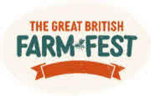
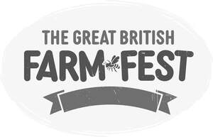

Trade Mark Journal No.2026/009 27 February 2026
UK00004307168 8 December 2025 (16,25,28,35,41)
Mark 1

Mark 2

- Class 16
- Printed matter; books; flyers; brochures; leaflets and event programmes; printed tickets; printed passes; stationery; newsletters; printed publications; magazines; newsletters; stationery; albums; promotional literature; stickers; bookmarks; erasers; notepads; pens and pencils; diaries; calendars; posters and prints; stickers and transfers; temporary tattoos; postcards; greetings cards; paper or card beer mats and coasters; recipe books.
- Class 25
- Clothing; footwear; headgear; t-shirts; sweat shirts; hats; caps; jackets; boots; wellington boots; bandanas; shorts; socks; hoodies; scarves.
- Class 28
- Toys, games and playthings; toys; action toys; educational toys; wooden toys; model toys; plush toys; soft toys; stuffed toys; cuddly toys; construction toys; farming toys; toys for pets; toys for animals; water squirting toys; bubble making wand and solution sets; toy animals; toy vehicles; toy tractors; toy wagons; toy gardening sets; toy wheelbarrows.
- Class 35
- Arranging, organising, conducting, promoting and managing events, exhibitions and shows for commercial purposes; arranging, organising, conducting, promoting and managing events, exhibitions and shows in the field of country shows, music festivals, and related events for commercial purposes; advertising, including promotion of products and services of third parties through sponsoring arrangements and license agreements relating to country shows, music festivals, and related events; retail and online retail services in relation to the sale of clothing, footwear, headgear, t-shirts, sweat shirts, hats, caps, jackets, boots, wellington boots, bandanas, shorts, socks, hoodies, and scarves; retail and online retail services in relation to the sale of printed matter, books, flyers, brochures, leaflets, and event programmes, printed tickets, printed passes, stationery, newsletters, , printed publications, magazines, newsletters, stationery, albums, promotional literature, stickers, bookmarks, erasers, notepads, pens and pencils, diaries, calendars, posters and prints, stickers and transfers, temporary tattoos, postcards, greetings cards, paper or card beer mats and coasters and recipe books; retail and online retail services in relation to the sale of prerecorded media, prerecorded DVDs, prerecorded optical media, prerecorded magnetic media, and digital downloads; retail and online retail services in relation to the sale of toys, games and playthings.
- Class 41
- Arranging, organising, conducting, promoting and managing events, exhibitions and shows for entertainment purposes; arranging, organising, conducting, promoting and managing events, exhibitions and shows for educational purposes; arranging, organising, conducting, promoting and managing events, exhibitions and shows in the field of country shows, music festivals, and related events for entertainment purposes; arranging, organising, conducting, promoting and managing events, exhibitions and shows in the field of country shows, music festivals, and related events for educational purposes; arranging, organising, conducting, promoting and managing country shows, music festivals, live performances, and public events; entertainment services, including the provision of live performances, music concerts, demonstrations, animal shows, agricultural exhibitions, and countryside sports; organising competitions and contests in the fields of agriculture, horticulture, livestock, country skills, and music-related activities; educational services related to rural life, agriculture, horticulture, and music through seminars, workshops, and demonstrations; providing information in relation to country shows, music festivals, agricultural events, and rural activities; organisation of live music performances, DJ sets, and stage shows at music festivals.
FARM FEST LTD
Representative: Cleveland Scott York